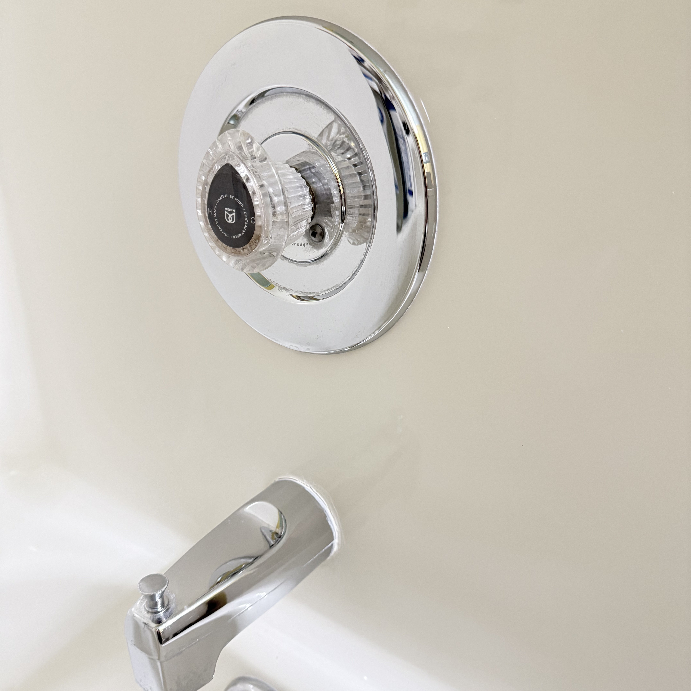
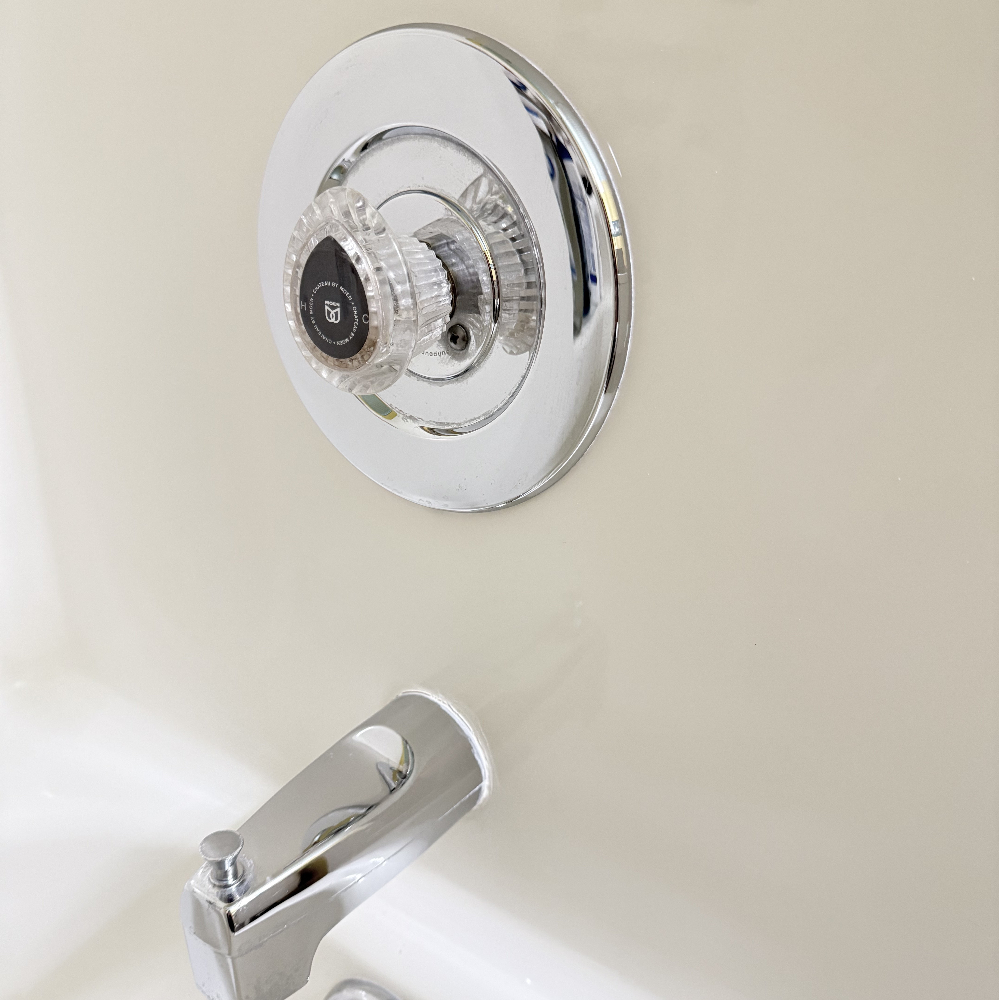

Email: lakedogstonecare@gmail.com
Phone: 704-880-5823
Email: lakedogstonecare@gmail.com
Phone: 704-880-5823
Is your fiberglass shower or tub insert looking dull, yellowed, or scratched? LakeDog Stone Care offers professional fiberglass polishing to restore gloss and clarity. We remove haze, scuffs, and surface wear — making old fiberglass look clean and renewed without the cost of replacement.
 

Perfect for fiberglass shower surrounds, tub inserts, and builder-grade units that need a professional refresh.
LakeDog Stone Care provides fiberglass polishing services throughout Mooresville, Lake Norman, Davidson, Cornelius, Denver, and nearby towns.